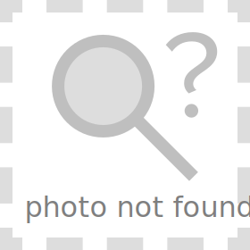

Drag and drop some photos here to add them to Fotag, or
click here to browse
Fotag lets you import, organize, and rate your photos.
You haven't added any photos yet.
Remove this image from Fotag?
Remove
Cancel

Save
Cancel
Click to rate
Fotag
Filter
Show all
View
Click anywhere to close
Mark Me!
Run Unit Tests